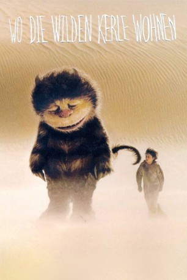

#8927 Wo die wilden Kerle wohnen
 
 IMDB-Wertung: 6.8 / 10
IMDB-Wertung: 6.8 / 10  Metascore: 0
Metascore: 0 
Max ist ein Kind voller Wut und unkontrollierter Impulse, und doch eine sensitive Seele, die sich allein gelassen fühlt. Nach einem Streit mit seiner gutmütigen, aber überforderten Mutter flüchtet er in eine Traumwelt - auf eine Insel mit monströs wirkenden, im Grunde aber kindlichen Kreaturen, die den wilden Jungen als König akzeptieren. Einige Tage lebt und tollt Max mit den neuen Freunden, bis es auch hier zu Enttäuschungen und Streit kommt. Doch Max weiß, dass jemand auf ihn wartet, der ihn immer lieben wird. Bedingungslos.
Jahr: 2009
Dauer: 101 Minuten
FSK: 6
Land: Deutschland Studio: Warner Bros.Tonspuren: DD5.1 - ,
Untertitel:
Auflösung: 1080p (1920x800) Größe: 5416 MB
Genre: Drama, Abenteuer, Fantasy, Familie
Regisseur:  Spike Jonze
Spike Jonze
Drehbuch: Spike Jonze
Soundtrack: Carter Burwell, Karen O
Darsteller:
- Max Records als Max
 Ryan Corr als Claire's Friend
Ryan Corr als Claire's Friend Catherine Keener als Mom
Catherine Keener als Mom Steve Mouzakis als Teacher
Steve Mouzakis als Teacher Mark Ruffalo als The Boyfriend
Mark Ruffalo als The Boyfriend James Gandolfini als Carol
James Gandolfini als Carol- Vincent Crowley als Carol Suit Performer
 Paul Dano als Alexander
Paul Dano als Alexander- Sonny Gerasimowicz als Alexander Suit Performer
 Catherine O'Hara als Judith
Catherine O'Hara als Judith- Nick Farnell als Judith Suit Performer
 Forest Whitaker als Ira
Forest Whitaker als Ira- Sam Longley als Ira Suit Performer
 Michael Berry Jr. als The Bull
Michael Berry Jr. als The Bull Angus Sampson als The Bull Suit Performer
Angus Sampson als The Bull Suit Performer- Mark McCracken als The Bull Additional Suit Performer
 Chris Cooper als Douglas
Chris Cooper als Douglas John Leary als Douglas Suit Performer
John Leary als Douglas Suit Performer Lauren Ambrose als KW
Lauren Ambrose als KW Alice Parkinson als KW Suit Performer
Alice Parkinson als KW Suit Performer Spike Jonze als Bob / Terry
Spike Jonze als Bob / Terry- Kalia Prescott als Max's Classmate (uncredited)
- Pepita Emmerichs als Claire
- Max Pfeifer als Claire's Friend
- Madeleine Greaves als Claire's Friend
- Joshua Jay als Claire's Friend
- Garon Michael als KW Additional Suit Performer
- James Epinfaniou als Additional Max Performer
- Joshua Evans als Additional Max Performer
- Tess Grimshaw Lloyd als Additional Max Performer
- Lucas Haynes als Additional Max Performer
- Nathan Veal als Additional Max Performer
Datei: X:\Kinder Filme (N-Z)\Wo die wilden Kerle wohnen (2009, FSK6, 1920x800).mkv seit 08.05.2018
Festplatte: Kinder-Filme+Trick
 Es gibt insgesamt 87 Filme in der Gruppe 'Kinder Filme (N-Z)'
Es gibt insgesamt 87 Filme in der Gruppe 'Kinder Filme (N-Z)'